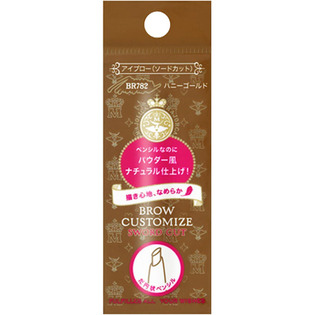

返回列表
产品名称：マジョリカマジョルカ ブローカスタマイズ（ソードカット）ｎ ハニーゴールド

資生堂 マジョリカマジョルカ ブローカスタマイズ（ソードカット）ｎ ハニーゴールド ＢＲ７８２
メーカー 資生堂
JANコード 4901872138517
商品の特徴
ペンシルなのにパウダー風ナチュラル仕上げ！
描き心地、なめらか
だ円状ペンシル
成分・分量
-
用法及び用量
【使用方法】
●別売りのマジョリカマジョルカブローカスタマイズ（ホルダー）に差し込んでセットします。
●ホルダーを右にまわして２～３ｍｍ芯をくり出してお使いください。